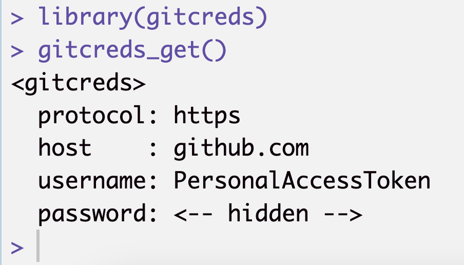
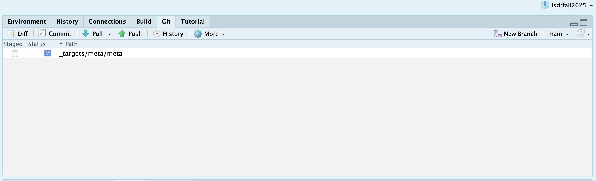

Code
library(usethis) #you may need to install this using install.packages('usethis')
use_git_config(user.name = "Matt Williamson", user.email = "mattwilliamson@boisestate.edu") #your info hereWe are using GitHub classroom for all of the assignments in this course. This allows each of you to have your own repositories for version control and backup of your code without the worries of stepping on someone else toes. The goal of this class is not to have you become a ‘master’ of all things git, but I am hoping you’ll learn the utility of version control and adopt as much of it as make sense for you and your workflows.
The first thing you’ll need to do is accept the invitation to ’assignment-1` repository (repo). This should automatically clone (make an exact copy) of the assignment repo in your personal account.
Unfortunately, GitHub has ended its support for username/password remote authentication. Instead, it uses something called a Personal Access Token. You can read more about it here if you are interested, but the easiest way to deal with this is by following Jenny Bryan’s happygitwithr recommended approach:
library(usethis) #you may need to install this using install.packages('usethis')
use_git_config(user.name = "Matt Williamson", user.email = "mattwilliamson@boisestate.edu") #your info hereusethis::create_github_token()library(gitcreds) #may need to install this too
gitcreds_set() #should prompt you for your pat - paste it heregitcreds_get()R should return something that looks like this:

Assuming all this has worked, you should be able to click on the “Git” tab and see something like this:

Everytime you begin working on code, make sure you “Pull” from the remote repository to make sure you have the most recent version of things (this is especially important when you are collaborating with people).
Make some changes to code
Save those changes
“Commit” those changes - Think of commits as ‘breadcrumbs’ they help you remember where you were in the coding process in case you need to revert back to a previous version. Your commit messages should help you remember what was ‘happening’ in the code when you made the commit. In general, you should save and commit fairly frequently and especially everytime you do something ‘consequential’. Git allows you to ‘turn back time’, but that’s only useful if you left enough information to get back to where you want to be.
Push your work to the remote - when you’re done working on the project for the day, push your local changes to the remote. This will ensure that if you switch computers or if someone else is going to work on the project, you (or they) will have the most recent version. Plus, if you don’t do this, step 1 will really mess you up.
This is a Quarto document (in fact, this whole webpage and all of the slides were built with Quarto). Quarto uses the knitr package to render files containing R, python, and julia to Markdown as a means of rendering code, text, math, figures, and tables to a variety of formats.

Markdown is a simple formatting syntax for authoring HTML documents (it’s the basis for the Readme docs that GitHub creates for you). From there, RStudio calls pandoc to render the markdown file into your chosen output format. I’m telling you this because there will be times when some part of this pipeline may break and you’ll need to know where the errors might be coming from.
You can create new Quarto documents by going to File >> New File >> New Quarto Document (or Presentation). There are lots of new documents devoted to Quarto, but some of them may assume you have some familiarity with Markdown or Rmarkdown. As such, I’m keeping this links to helpful Rmarkdown resources like this cheatsheet and a much longer user’s guide in case you need more in-depth discussion of some of the ideas behind authoring in Quarto. I don’t expect you to become an expert in Quarto, but it is a helpful way to keep all of your thoughts and code together in a single, coherent document. Getting proficient in Quarto and git allows you to work with collaborators on an analysis, graphics, and manuscript all within a single platform. This fully-integrated workflow takes practice and patience (especially when you have collaborators that are new to this approach), this course is just an initial step down that path. I’ll do my best to keep it simple - please let me know if you have questions!
The University of Exeter has been conducting an ongoing survey to understand the age at which the belief in Santa Claus begins to drop off. A sample of the data is located in your assignment01 folder. Our task is to bring the data into R, conduct some preliminary exploration of the data, and then fit a model to the data to see if age predicts belief in Santa. We’ll start by branching off of the master Quarto doc in our GitHub repo and then work through the steps together.
Before we get started, let’s sketch out the steps in our analysis using pseudocode. If you take a look at the tasks I’ve outlined above, you might construct your pseudocode like this:
LOAD: all packages that we need for the analysis
READ: Data located in isthereasanta.txt
CHECK: Data structure and values
CLEAN: Are there odd values?
PLOT: Age vs Belief
MODEL: GLM of Age vs. beliefNow that we have the basic steps in place, let’s transform the pseudocode into a repeatable Quarto document that explains what we’re doing, why, and what we found.
Part of what makes R so powerful for data analysis is the number of ready-made functions and packages that are designed for all the things. That said, you can’t take advantage of that power if you don’t load them into your session so that their functions become available. In general, it’s best to do that first thing your document so that other folks can see what packages are necessary before you start running analyses. If you pay attention when these packages load, you may see warnings that a function is masked. This happens because two (or more) packages have functions with the same name. We can be explicit about which version we want by using packagename::functionname(). You’ll see that more later this semester.
library(tidyverse)── Attaching core tidyverse packages ──────────────────────── tidyverse 2.0.0 ──
✔ dplyr 1.1.4 ✔ readr 2.1.5
✔ forcats 1.0.0 ✔ stringr 1.5.1
✔ ggplot2 3.5.2 ✔ tibble 3.3.0
✔ lubridate 1.9.4 ✔ tidyr 1.3.1
✔ purrr 1.0.4
── Conflicts ────────────────────────────────────────── tidyverse_conflicts() ──
✖ dplyr::filter() masks stats::filter()
✖ dplyr::lag() masks stats::lag()
ℹ Use the conflicted package (<http://conflicted.r-lib.org/>) to force all conflicts to become errorsBased on our pseudocode our first step is the read the data. We can create headings in Quarto using different numbers of # symbols to keep things organized. The code below uses ``` to create the code chunk and then {r} to tell Quarto which environment to use when running it. I’m specifying a filepath because I’m not working within our git repo, this isn’t great practice, but it’s necessary for the webpage to render correctly. We use paste0 to combine the filepath with the file name (isthereasanta.txt) then read in the data using read_table.
filepath <- "/Users/mattwilliamson/Google Drive/My Drive/TEACHING/Intro_Spatial_Data_R/Data/2022/assignment01/"
#READ
santa <- read_table(paste0(filepath, "isthereasanta.txt"))Now that we’ve got the data loaded and assigned it to the santa object. It’s always a good idea to take a look and make sure things look the way you expect, check for NAs, and get a basic understanding of the way your data is being represented by R. This process will get more involved once we start working with spatial data, but it’s good to get in the habit now. We’ll start by looking at the first few rows (using head()), then get a sense for the classes of data using str(), and check for any NAs.
head(santa)
str(santa)
any(is.na(santa))You’ll notice a few things. First, because we read this in using the read_table function, the result is a tibble. As such, head() returns both the data and the classes. This makes the result of str() largely redundant (note that if santa were a data.frame this would not be true). The combination of any() with is.na() asks whether any of the cells in santa have an NA value. You can see that there are NAs. Most statistical modeling functions in R don’t like NAs so we’ll try to clean those up here. Before we clean them, let’s try to learn what they are. We can use which() to identify the locations of the NAs.
which(is.na(santa), arr.ind = TRUE)We see that all of them are in the age column (our key predictor variable!). We could also have discovered this using summary().
summary(santa)Deciding how to clean NAs is an important decision. Many people choose to drop any incomplete records. We can do that with complete.cases() and see that the resulting object now has only 47 rows.
santa_complete_cases <- santa[complete.cases(santa),]Dropping the incomplete cases may seem like a “safe” approach, but what if there is some systematic reason for the data to be incomplete. Maybe older people are less likely to provide their age? If that’s the case, then dropping these cases may bias our dataset and the models that result. In that case, we may decide to “impute” values for the NAs based on some principled approach. We’ll talk more about what it means to take a principled approach to imputation later in this class. For now, let’s just try to strategies: 1 where we assign the mean() value of age and one where we assign the max() value (to reflect our hypothesis that older people may not provide their age). We’ll do this by using the ifelse() function. Note that we can only do this because all of the NAs are in a single column.
santa_mean <- santa
santa_mean$Age <- ifelse(is.na(santa_mean$Age), round(mean(santa_mean$Age, na.rm=TRUE),digits=0), santa_mean$Age)
santa_max <- santa
santa_max$Age <- ifelse(is.na(santa_max$Age), max(santa_max$Age, na.rm=TRUE), santa_max$Age)Now that we have a few clean datasets, let’s just take a quick look to see if our intuition is correct about the relationship between age and belief in santa. The idea isn’t so much to “prove” your hypothesis, but rather to get to know your data better as a means of identifying potential outliers and thinking about the distribution of your data.
plot(Believe ~ Age, data=santa_complete_cases, main="Age vs. Belief in Santa (complete cases)")
plot(Believe ~ Age, data=santa_mean, main="Age vs. Belief in Santa (Age at mean)")
plot(Believe ~ Age, data=santa_max, main="Age vs. Belief in Santa (Age at max)")These plots highlight two things. First, because Believe is a logical variable, the only possible outcomes are 0 and 1. This means we can’t fit a typical linear regression (we’ll use a logistic regression instead). Also, we notice that our choice of imputation strategy makes a difference! Let’s fit some models and see what kind of difference it makes.
We’ll be using a generalized linear model for this analysis. The details will come up later, but for now, let’s keep it simple. The syntax for the glm() function is relatively straightforward. First we specify the model Believe ~ Age, then we tell it what family binomial(link="logit"), then we remind R of the data. We use the binomial family because there are only 2 possible outcomes (TRUE and FALSE).
fit_complete_cases <- glm(Believe ~ Age, family=binomial(link="logit"), data=santa_complete_cases)
fit_mean <- glm(Believe ~ Age, family=binomial(link="logit"), data=santa_mean)
fit_max <- glm(Believe ~ Age, family=binomial(link="logit"), data=santa_max)
summary(fit_complete_cases)$coef
summary(fit_mean)$coef
summary(fit_max)$coefWe see the older a person is, the less likely they are to believe in Santa! We also see that the choice of how we handle NAs affects the size of the effect, but not the direction. In class, we’ll write a function to simulate some new data based on this model and see if our results are robust to different assumptions.
When you click the Render button a document will be generated that includes both content as well as the output of any embedded R code chunks within the document.